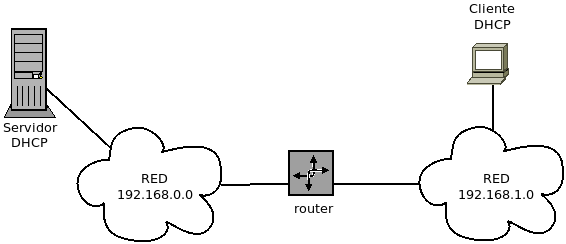
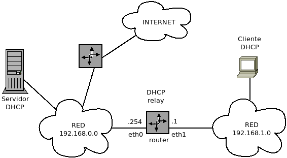

6.1.3. DHCP con dnsmasq¶
dnsmasq es un pequeño servidor que puede hacer las veces de servidor DNS caché y servidor DHCP1. Si la configuración es sencilla, podemos usarlo en vez del tándem bind (para DNS) y el servidor del ISC (para DHCP). En particular puede interesarnos cuando se dan las siguientes circunstancias:
El servicio DNS es interno y no pretedemos hacer nada especialemnte complicado.
No requerimos que la caché de direcciones sea muy grande (dnsmasq almacena los nombres en memoria).
Nota
Bajo este epígrafe trataremos sólo su capacidad para hacer de servidor DHCP. Para ver cómo usarlo como servidor DNS, consúltese más adelante.
Advertencia
Sin configuración alguna, dnsmasq levantará el servidor DNS, por lo que si se quiere prescindir de él es necesario incluir en la configuración la directiva:
port=0
Advertencia
No trataremos aquí la configuración del servicio para arranque por red. Si ese es un interés, vaya al epígrafe correspondiente <pxe> que se desarrolla más adelante.
Antes de empezar, supongamos que nuestro punto de partida es una máquina con tres interfaces físicas:
allow-hotplug eth0
iface eth0 inet dhcp
up iptables -t nat -A POSTROUTING -o $IFACE -j MASQUERADE
down iptables -t nat -D POSTROUTING -o $IFACE -j MASQUERADE
# Red interna 1 (interna1.vm)
allow-hotplug eth1
iface eth1 inet static
address 192.168.255.1/24
# Red interna 2 (interna2.vm)
allow-hotplug eth2
iface eth2 inet static
address 192.168.254.1/24
y que nuestra intención es proporcionar configuración dinámica de direcciones a las dos redes internas.
La instalación no tiene ninguna complicación:
# apt-get install dnsmasq
6.1.3.1. Configuración básica¶
Su fichero de configuración es /etc/dnsmasq.conf, pero también
puede hacerse una configuración modular creando ficheros dentro de
/etc/dnsmasq.d, gracias a cómo se lanza el servicio2. Así pues,
creemos dentro de tal directorio un fichero dhcp.conf con la siguiente
configuración:
log-dhcp
dhcp-range=192.168.255.64,192.168.255.127,10m
domain=interna1.vm,192.168.255.0/24
La primera línea es prescindible, pero provoca más información en el registro que nos puede ser útil mientras estudiamos una configuración. Las otras dos líneas establecen el rango y tiempo de concesión y el dominio asociado. Para simplificar, nos olvidaremos por ahora de la otra interfaz.
Esta es la configuración más básica por cuanto el resto de parámetros de configuración necesarios (fundamentalmente DNS y puerta de enlace) se ajustan a la IP del servidor.
Podemos, no obstante, añadir parámetros (opciones) del siguiente modo:
dhcp-option=6,192.169.1.1
es decir, a la opción 63 (que representa los servidores DNS) se le asocia el valor 192.168.1.1. La mayoría de estas opciones tiene asociado también un nombre que puede consultarse con:
$ /usr/sbin/dnsmasq --help dhcp
Opciones DHCP conocidas:
1 netmask
2 time-offset
3 router
6 dns-server
7 log-server
[...]
Usando el nombre, la línea anterior también podría haberse escrito así:
dhcp-option=option:dns-server,192.168.1.1
Obsérvese que no se indica de qué tipo es el dato, por lo que dnsmasq lo interpreta según el aspecto que tenga el valor:
Si es una IP, lo interpretará como cuatro bytes4.
Si una cadena, como cadena5. y si
Si es un número decimal, habrá que especificar si se trata de un byte, dos o tres rematando la expresión del número con los sufijos b, s o i, respectivamente.
Si se quieren escribir valores hexadecimales, debe separarse cada byte con dos puntos: 00:1A:CF.
Aunque el servidor DHCP sólo envía las opciones requeridas por el cliente, es posible forzar el envío de otras opciones. Por ejemplo:
dhcp-option-force=209,pxelinux.cfg/normal
la cual, aunque no la haya pèdido, envía al cliente la opción 209, que identifica al fichero de arranque y es propia de PXE.
Advertencia
Si atendemos al protocolo, el tiempo de concesión se envía como
opción (es la número 51). Sin embargo, es inutil fijarlo con
dhcp-option:
dhcp-option=51,300i # Esto es inútil.
ya que dnsmasq atiende sólo al valor establecido con
dhcp-range6.
6.1.3.2. Declaración de máquinas¶
En ocasiones, se tienen máquinas en la red a las que se quiere asignar una IP
fija. Esto se puede hacer mediante la directiva dhcp-host:
dhcp-host=00:11:22:33:44:55,192.168.255.2
Advertencia
Cuando se asocian IPs fijas con máquinas, éstas deben quedar
fuera del rango definido con dhcp-range.
Es posible añadir más opciones:
dhcp-host=00:11:22:33:44:55,192.168.255.2,nas,24h
lo cual proporciona, además, el nombre nas y hace la concesión durante 24 horas. Salvo la MAC, que es el campo identificativo, el resto de campos son optativos y, como son todos de distinto tipo, no es necesario marcar de modo alguno que falta. Por ejemplo:
dhcp-host=00:11:22:33:44:55,nas
asocia el nombre a la máquina con la MAC especificada, sin fijar IP alguna
por lo que esta se concederá según el rango que se definiera con dhcp-range.
Nota
El nombre no solamente se envía al cliente, sino que. si está
funcionando el DNS integrado en dnsmasq, se hace la asociación
con la IP asignada en el servidor DNS, por lo que, durante el tiempo que
se encuentre concedida la IP, podrá hacerse tanto la resolución directa
como la inversa. Ahora bien, para esto es importante que se haya usado la
directiva dpmain para fijar el dominio y que dnsmasq pueda
constituir el FQDN.
Esta misma directiva permite identificar las máquinas con el identificador que envían al servidor, en vez de con la MAC. Para ello basta con usar el prefijo id:
dhcp-host=id:00:AA:21:11,192.168.255.10
También se puede no escuchar la petición y dejárse tal máquina sin configuración:
dhcp-host=00:11:22:33:44:55,ignore
Es posible, incluso, usar la directiva así:
dhcp-host=00:11:22:00:00:00,00:11:22:00:00:01,00:11:22:00:00:02
es decir, incluir varias direcciones MAC y asociarlas a alguna propiedad (ignore, un tiempo de concesión, etc.) o bien no asociarlas a ninguna. Al no incluir ninguna opción, no se realiza una configuración especial, lo cual en principio puede parecer estúpido, pero sólo aparentemente: todas las máquinas que se citan expresamente, dnsmasq las considera conocidas y se les asocia una etiqueta known, que podrá ser usada para realizar configuración condicional.
dnsmasq da la posibilidad de hacer estas definiciones de máquina en
uno o varios ficheros independientes gracias a las directivas dhcp-hostsfile
y dhcp-hostsdir:
dhcp-hostsfile=/etc/dnsmasq.dhcphosts.conf
Dentro de estos ficheros basta con escribir los valores que se usan en la
directiva dhcp-host, uno por línea. Por ejemplo:
# Definición de máquinas para DHCP
00:11:22:33:44:55,192.168.255.2,nas,24h
00:80:52:AA:BB:CC,alumno1,1h
Advertencia
Hacer las definiciones de máquina de esta forma, es decir, independientes de los ficheros de configuración, tiene una ventaja capital: cuando se manda una señal SIGHUP 7 a dnsmasq este no acaba, sino que recarga los ficheros de máquina, tanto estos como los que usa el servidor DNS. En consecuencia, si se usan ficheros independientes para definir las máquinas, pueden modificarse y recargarse, sin necesidad de parar el servidor.
6.1.3.3. Configuración condicional¶
Imaginemos que añadimos a nuestra configuración la segunda red con lo que la configuración queda así:
log-dhcp
dhcp-range=192.168.255.64,192.168.255.127,10m
domain=interna1.vm,192.168.255.0/24
dhcp-range=192.168.254.64,192.168.254.127,20m
domain=interna2.vm,192.168.245.0/24
#dhcp-option=6,192.168.1.1
dhcp-hostsfile=/etc/dnsmasq.hosts.conf
Hemos definido los rangos y dominios para ambas redes y hasta aquí todo bien. Pero ahora imaginemos que descomentamos la directiva que define los servidores DNS y reiniciamos el servicio. Cuando lo hagamos, comprobaremos que el valor de la opción afecta a ambas redes y los clientes de ambas redes configurarán su servidor DNS como 192.168.1.1. La pregunta ante esto es, ¿no hay alguna forma de que las definiciones de la configuración sean condicionales y no afecten a todos los clientes?
La respuesta es que sí y para lograrlo se hace uso de las etiquetas. En el
caso particular de la directiva dhcp-range se define implícitamente una
etiqueta cuyo nombre coincide con el nombre de la interfaz8, por lo que
podemos usarla luego al definir la opción para hacer que ésta sólo se aplique a
los clientes a los que sea aplicable la etiqueta:
dhcp-option=tag:eth1,6,192.168.1.1
Nota
como está claro que en el caso de las directiva dhcp-option la
etiqueta es para aplicación, no para definición, puede prescindirse del prefijo
tag::
dhcp-option=eth1,6,192.168.1.1
El criterio general es que podemos definir una etiqueta con aquellas directivas que sirven para caracterizar al cliente y aplicar la etiqueta en aquellas otras directivas que sirven para definir la información que se les envía.
6.1.3.3.1. Definición de etiquetas¶
Un cliente, al pedir una configuración, informa al servidor de lo siguiente9:
El identificador del vendedor (la opción 60 o vendor-class-identifier) que en dnsmasq puede inquirirse con la directiva
dhcp-vendorclass.La dirección MAC, que puede inquirise con dos directivas:
dhcp-host, que ya hemos visto y que sirve para bastante más (por. ejemplo, para asociar un nombre o una IP).dhcp-mac, que sirve exclusivamente para lo que tratamos y que, además, no incluye las máquinas referidas dentro de la etiqueta «known».
Su identificador de cliente (la opción 61 o dhcp-client-identifier), que también puede inquirise con
dhcp-host.La clase de usuario (la opción 77 o user-class), que se inquiere con la directiva
dhcp-userclass.La lista de parámetros DHCP (opción 55 o parameter request list) que el cliente pide al servidor.
Indirectamente, la red en la que está al enviar la petición y que ésta sea recibida por el servidor a través de una interfaz (
dhcp-range).
Por tanto, las directivas que permiten definir etiquetas son:
dhcp-rangeYa hemos visto que
dhcp-rangerealiza una definición implícita.dhcp-vendorclass,dhcp-userclassPara ambas basta con incluir parte del valor que envíe el cliente y definir el nombre de la etiqueta. Por ejemplo:
dhcp-vendorclass=set:pxeclient,PXEClient dhcp-userclass=set:ipxe,iPXE
asociaría la etiqueta pxeclient a todos los clientes que enviaran como identificador del vendedor una cadena que contenga «PXEClient» y asociaría la etiqueta ipxe a los clientes que enviaran como clase de usuario una cadena que contenga «iPXE».
dhcp-hostComo en los casos anteriores, basta con definir la etiqueta prefijándola con set::
dhcp-host=set:profesor,00:11:22:33:44:55,profesor,24hDe este modo, la máquina con MAC 00:11:22:33:44:55 estará asociada a la etiqueta «profesor». También puede usarse la misma etiqueta repetidas veces, de manera que todas las máquinas estará asociadas a la misma etiqueta:
dhcp-host=set:profesor,00:11:22:33:44:55,profesor1,24h dhcp-host=set:profesor,00:11:22:33:44:56,profesor2,24h
Es posible dejar en la directiva indefinidos los últimos pares de la MAC sustituyéndolos por asteriscos (»*»). Por ejemplo, si queremos sólo definir los tres primeros pares que identifican al fabricante:
dhcp-host=set:nuevos,00:11:22:*:*:*Además, ha de tenerse en cuenta que cualquier máquina definida con esta directiva se incluye dentro de la etiqueta «known». Dentro de ellas están incluidas las máquinas que concuerdan con MAC que tienen asteriscos. Por tanto, en nuestro ejemplo, todas las máquinas «nuevos» son máquinas conocidas.
dhcp-macA diferencia de la anterior sólo permite definir una etiqueta basándose en el valor de la MAC:
dhcp-mac=set:profesor,00:11:22:33:44:55 dhcp-mac=set:alumno,fc:a5:cd:*:*:*
Advertencia
Téngase en cuenta que las máquinas o grupos de máquinas referidos mediante esta directiva no se consideran conocidas y, por tanto, no se incluirán dentro de la etiqueta «known».
dhcp-matchPermite comprobar el valor de una opción arbitraria mandada por el cliente, frente a
dhcp-vendorclassydhcp-userclassque hacen la comprobación exclusivamente para las opciones 60 y 71 respectivamente. Por ejemplo, las dos líneas anteriores son equivalentes a estas:dhcp-match=set:pxeclient,60,PXEClient dhcp-match=set:ipxe,71,iPXE
Nota
En el caso de esta opción, podemos prescindir del prefijo.
Nota
Con esta directiva es posible analizar el valor de la opción 55 y, ya que cada cliente usa una lista característica, puede llegarse a conocer cuál el sistema que ejecuta el cliente con bastante fiabiliad. Esta estrategia es la que usan bases de datos como ésta.
6.1.3.3.2. Aplicación de etiquetas¶
Como ya se ha adelantado, la definición de etiquetas se hace para diferenciar el trato que se tiene con los clientes. Por tanto, podremos aplicar etiquetas en aquellas opciones que sirven para modificar la información que se envía a los clientes. Fundamentalmente:
dhcp-rangePermite definir el rango para las máquinas asociadas a una etiqueta. Por ejemplo, si queremos tratar de distinta forma las asignaciones a clientes PXE:
dhcp-vendorclass=set:pxeclient,PXEClient dhcp-range=tag:pxeclient,192.168.255.100,192.168.255.127,3m dhcp-range=tag:!pxeclient,192.168.255.128,192.168.255.223,8h
Obsérvese que para que que la directiva se aplique a los clientes no asociados a la etiqueta debe anteponerse un signo «!» (o una almohadilla) al nombre de la etiqueta.
Nota
Si no se quiere definir un rango exclusivo, sino simplemente hacer más corto el tiempo de concesión, basta con repetir el rango:
dhcp-vendorclass=set:pxeclient,PXEClient dhcp-range=tag:pxeclient,192.168.255.128,192.168.255.223,3m dhcp-range=tag:!pxeclient,192.168.255.128,192.168.255.223,8h
dhcp-option(ydhcp-option-force)Para enviar la opción definida sólo a los clientes asociados a la etiqueta:
dhcp-option=tag:eth1,6,192.168.1.1En este caso, es posible ahorrarse el prefijo:
dhcp-option=eth1,6,192.168.1.1dhc-ignoreEvita responder a los clientes asociados a la etiqueta:
#dhcp-ignore=tag:PXEClient # Esto también es válido dhcp-ignore=PXEClient
En cualquier caso, es posible incluir varias etiquetas lo que hará que sólo se aplique a los cliente que estén asociados a ambas. Por ejemplo, esto evitaría el arranque por red a las máquinas desconocidas, pero les permitiría obtener una configuración de red cuando ejecutan su sistema local:
dhcp-ignore=pxeclient,!known
6.1.3.4. Configuraciones habituales¶
6.1.3.4.1. Simple¶
Una red con un rango único rango de asignación:
dhcp-range=192.168.255.128,192.168.255.191,4h
domain=interna.org,192.168.255.0/24
6.1.3.4.2. Con máquinas conocidas¶
Una red que tiene algunas máquinas conocidas a las que se quiere asignar un rango distinto o una ip fija:
domain=interna.org,192.168.255.0/24
dhcp-range=tag:known,192.168.255.128,192.168.255.191,4h
dhcp-range=tag:!known,192.168.255.92,192.168.255.127,30m
dhcp-hostsfile=/etc/dnsmasq.hosts.file.conf
y el fichero /etc/dnsmasq.hosts.conf con este contenido:
# Máquinas conocidas
00:11:22:*:*:* # Tipo de máquinas que componen la red.
00:11:22:33:44:55,192.168.255.2,profesor # Ordenador del profesor
6.1.3.4.3. Con rutas estáticas adicionales¶
Lo habitual es que al configurar un cliente sólo se le indique cuál es la puerta de enlace predeterminada10. pero puede ocurrir que necesitemos indicar a los clientes rutas adicionales. Para lograrlo existen dos opciones, la 33 que define el RFC 2132 y la 121 definida en el RFC 3442. La diferencia entre una y otra es que la segunda permite usar la notación CIDR para indicar la máscara de la red, mientras que con la primera no es posible expresar máscara alguna. Como por lo general los clientes piden la opción 121, pero no la 33, centraremos nuestra configuración en enviar esta opción para, por ejemplo, declarar cuál es la puerta de enlace que nos permite conectar con la red 172.16.0.0/16:
dhcp-range=192.168.255.128,192.168.255.191,4h
domain=interna.org,192.168.255.0/24
dhcp-option=121,172.16.0.0/16,192.168.255.2,0.0.0.0/0,192.168.255.1
Advertencia
El RFC 3442 prescribe que si el cliente recibe la opción 121 y la opción 3 (la que indica cuál es la puerta de enlace predeterminada), debe obviar esta última. Por ello, cuando se desea la opción para añadir una ruta adicional siempre es necesarto incluir la ruta predeterminada.
6.1.3.5. Retransmisión de peticiones¶
Por como hemos descrito el protocolo DHCP (una petición de broadcast no es capaz de salir de la red lógica en la que se emite) es obvio que cliente y servidor deben encontrarse en la misma red. Observemos el siguiente esquema:
En él el servidor DHCP y el cliente no están en la misma red, así que cualquier petición del cliente, moriría al llegar al router; y es obvio que para servirle una configuración de red, deberíamos montar un servidor dentro de la red 192.168.1.0/24. Sin embargo, podríamos querer centralizar toda la configuración dinámica en un único servidor y, por consiguiente, no estar conformes con esta solución. Así, tendríamos dos soluciones alternativas que sí nos permitirían mantener un único servidor DHCP:
La evidente de que el servidor DHCP tuviera una segunda interfaz en la segunda red y así pudiera repartir configuraciones en ambas redes. Esto podríamos materializarlo convirtiéndolo en el router entre ambas redes o conectando directamente una segunda interfaz a la otra red, o mediante el uso de interfaces VLAN. Pero podría darse el caso de que ninguna de estas tres alternativas pudiera materializarse.
Colocando en el router un retransmisor de peticiones DHCP para que recogiera las peticiones de los clientes de la red 192.168.1.0/24 y las hiciera llegar al servidor que se encuentra en la red 192.168.0.0/24.
Esta es la última solución que se describe bajo este epígrafe. dnsmasq no es capaz de realizar esta tarea, pero sí un software adicional creado por el mismo programador: dhcp-helper.
Consideremos el esquema completo como este:
donde en el servidor DHCP se sirven configuraciones para ambas redes:
dhcp-range=192.168.0.64,192.168.0.127,10m
dhcp-range=set:relay,192.168.1.128,192.168.1.191,2h
y en el router que separa ambas, se ha instalado el software:
# apt install dhcp-helper
La configuración es sumamente sencilla. En /etc/default/dhcp-helper
debemos indicar la interfaz que comunica con el servidor DHCP:
DHCPHELPER_OPTS="-b eth0"
lo cual determina que la petición se retransmita por esa interfaz y que por el resto se admitan peticiones. Si el servidor DHCP se preparó para servir también configuraciones en la red 192.168.1.0/24, entonces un cliente situado en esa red recibirá una IP.
Advertencia
Tenga presente que para esta comunicación no tiene efecto enmascarar el tráfico que sale por la eth0 del router-relay a fin de que el tráfico saliente (la concesión) sea capaz de regresar, Por esta razón el servidor DHCP debe saber cómo alcanzar la red 192.168.1.0/24. Por tanto, o se añade una entrada a su tabla de encaminamiento o se le añade a la tabla de su puerta de enlace (en este caso el router de salida a internet):
# ip route add 192.168.1.0/24 via 192.168.0.254
Notas al pie
- 1
E incluso también de servidor TFTP para integrar todo lo necesario para proporcionar arranque por red.
- 2
Véase
/etc/default/dnsmsaq- 3
Para consultar las opciones disponibles, se puede echar un vistazo a esta tabla.
- 4
Por ejemplo, la IP 192.168.1.1 equivaldría a c0a80101 y así se codificaría.
- 5
Cuando se quiere forzar a que un dato sea entendido como cadena, es necesario encerrarlo entre comillas:
dhcp-option=66,"192.168.1.1"- 6
Si probamos a usar
dhcp-option-forcees aún peor, porque se incluirá la opción 51 dos veces, una con el valor declarado endhcp-rangey otra con el declarado con la opción, lo cual viola fragantemente el estándar.- 7
Para ello basta con:
# kill -1 pid_de_dnsmasq
o, más fácil aún, si la distribución usa systemd:
# systemctl reload dnsmasq- 8
aunque se podría haber hecho esta definición explícita, si se prefiere:
dhcp-range=set:eth1,192.168.255.64,192.168.192.255.127,10mo incluso prescindiendo del prefijo set::
dhcp-range=eth1,192.168.255.64,192.168.192.255.127,10m- 9
Los nombres alternativos al número de opción que se dan a continuación son los que usa el servidor del ISC.
- 10
Si esta puerta de enlace es el propio servidor DHCP no será necesario ningún parámetro adicional, y, si es otra máquina, bastará con un dhcp-option:
dhcp-option=3,192.168.255.2